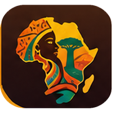

Ton appareil n’affiche pas le monde. Les contes, recettes, traditions et leçons restent disponibles dans le menu du bas.

N’Zassa Un continent, mille cultures
0/5trésors cachés
NSOE
ZQSD ou flèches pour marcher · glisse pour tourner la vue · E pour parler · M pour le menuJoystick pour marcher · glisse pour tourner la vue
Collection permanente · Nzassa
Visite immersive · masques et instruments
Musée des masques
Glisse pour regarder autour · molette ou pincement pour zoomer · sélectionne un masque ou un instrument pour lire sa notice
Pause
Ta progression est enregistrée dans ce navigateur.
ZQSD / WASD : marcher · Maj : courir · Espace : sauter · E : parler · M : menu · P : pause